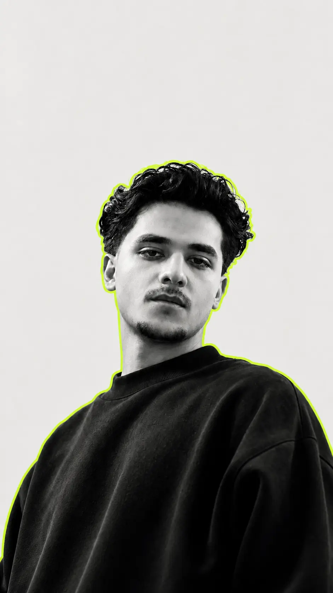

Event host
TEDx NIT Srinagar
Hosted the event on stage, helping connect speakers, ideas, and the audience through clear live communication.
About / Approach
I’m an engineering student at NIT Srinagar moving deliberately into software. My best learning happens below the surface: tracing an instruction, opening a socket, profiling an algorithm, or finding the exact abstraction that makes a backend easier to reason about. Outside code, I’ve led teams and organized a two-day national hackathon in Kashmir with more than 600 attendees.
B.Tech, NIT Srinagar, class of 2027 · Chemical Engineering
Srinagar, Jammu and Kashmir · Engineering fundamentals + self-directed computer scienceTimeline
Event host
Hosted the event on stage, helping connect speakers, ideas, and the audience through clear live communication.
Operations Lead
Spring 2023 – Autumn 2024. Organized workshops on Git, open-source contribution, and software development best practices.
Team lead
Led a 29-member team across three months of planning and execution, translating a large event into clear responsibilities and measurable checkpoints.
Systems projects
Built a minimal Redis-compatible C++ server (POSIX sockets, RESP, persistence) and completed an unfinished MOS 6502 CPU core with instruction-level tests. Public GitHub also records NES-Emu (July 2025), a C++ NES emulator with PPU and mapper support.
Lead Organiser
Led the planning and execution of a two-day national hackathon in Kashmir with more than 600 attendees, coordinating people, logistics, communication, and delivery under a fixed deadline.
Project
Public repository created 22 August 2026. An ncurses C++ visualizer that compares A* and Dijkstra on the same maze and stores layouts through the Redis-compatible server.
Project
Public repository created 12 September 2026. Offline intent classification, BM25 retrieval, and deterministic routing guardrails, with 95.95% escalation recall on 150 held-out cases.
Open source
Public repository created 8 October 2026. Twelve research workflows plus an update command for OpenAI Codex and Google Antigravity, with a shared evidence record. Same-day launch post on LinkedIn.
